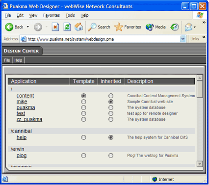

All application design data is stored in a relational database, as part of the “Puakma” system database. The main advantage of storing application design information in a database is the ability to store metadata along with it. Although many web platforms simply store files on the filesystem, storing them in a relational database creates the possibility to manipulate them programmatically and do simple yet powerful queries to update, interrogate or view many facets of the application, even create new elements dynamically.
Tornado Server web applications have the “.pma” (PuakMa Application) URL extention, eg: http://www.server.com/system/admin.pma . As the entire design is served from a relational database, the URL maybe somewhat confusing, because humans naturally associate a URL with a file path. In the case of Puakma, the URL is a reference to a set of design data stored in the database. A single server can hold many of these applications and run them all simultaneously.
Application specific data is stored separately to the design information. The database connection records within the application provide a simple way to reference the data storage area. It is incredibly easy to point your application at an existing data store, or to have multiple applications referencing the same datastore.
A Tornado Server application is a complete application package. It contains all design
elements and security information required to move the application between server instances.
The way the framework is designed allows for applications to be self-documenting, which make
supporting a Puakma application much easier. Developers use their web browsers to create
and work with web applications. The web design application can be found at
http://your_server/system/webdesign.pma All the source code is included with the webdesign
application so developers can modify or extend the base version to include new features
(for example “check-in/check-out”)

Web applications may be moved easily from server to server through by exporting them to a single “.pmx” file. A pmx file contains all the design data and design metadata to allow the application to be installed in another server instance.
Tornado Server clearly separates the User Interface (UI) from the logic. This makes applications more robust and less prone to being broken when graphic designers make slight alterations to the UI.
We recommend using the Puakma Vortex IDE for developing Tornado Server applications. Please see the website for more information.